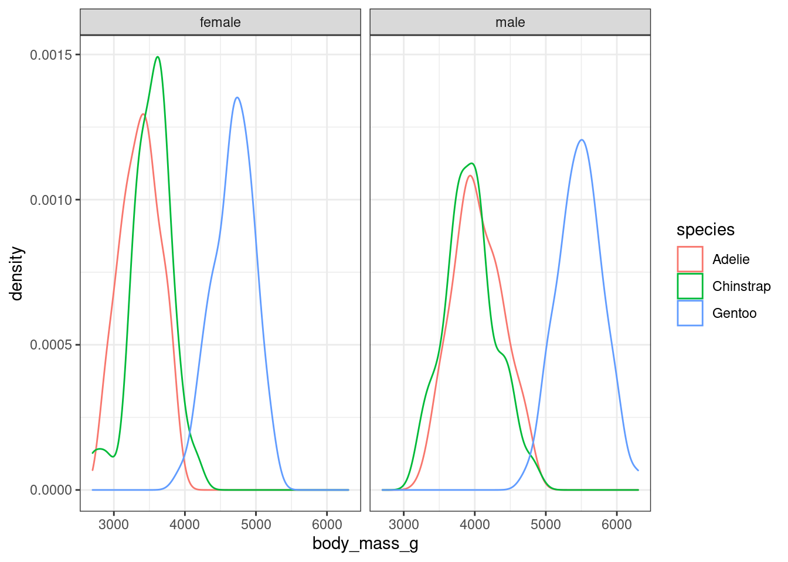
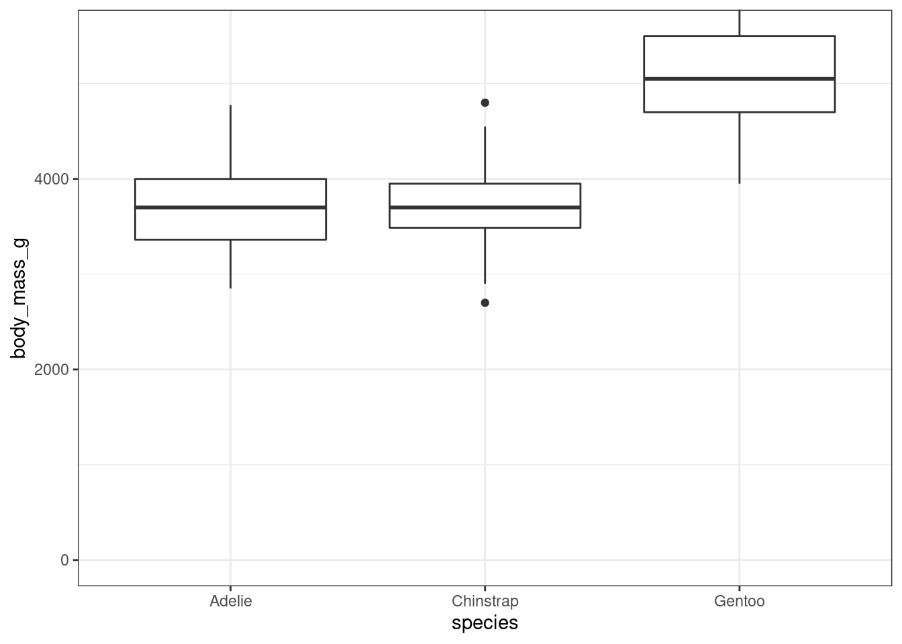
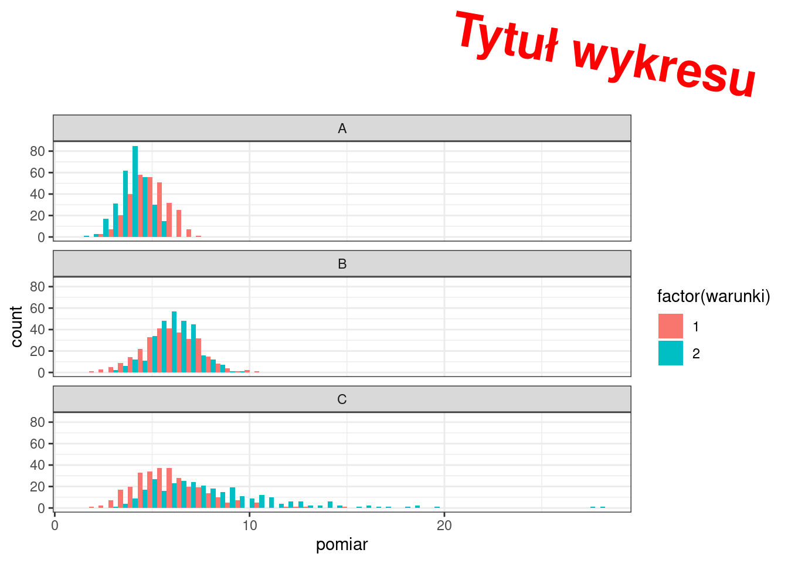
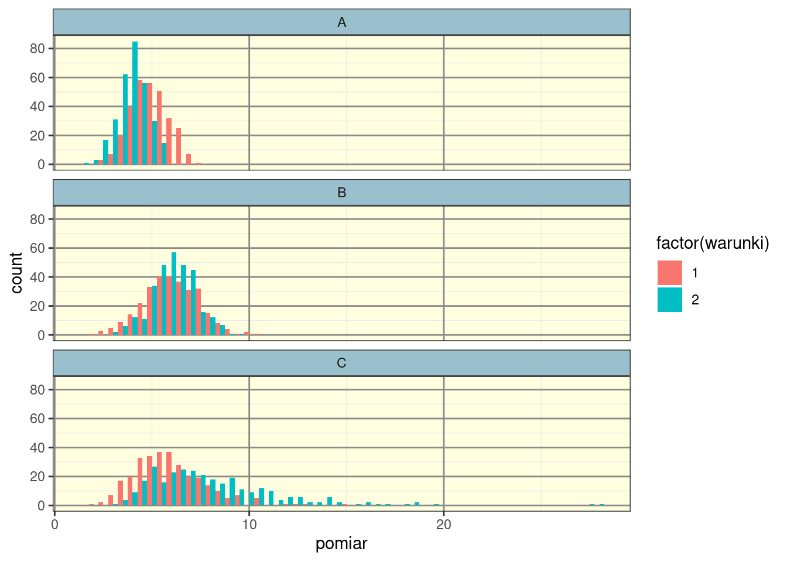
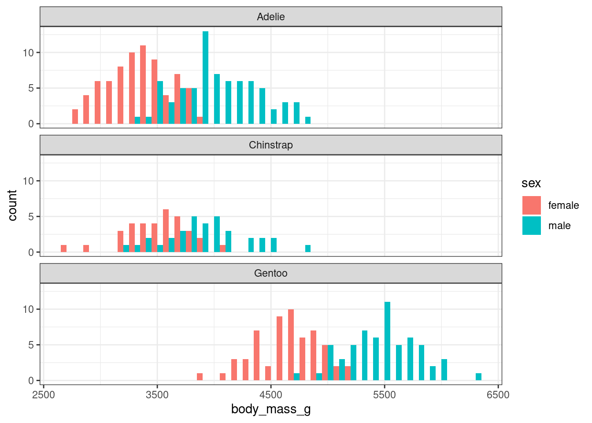
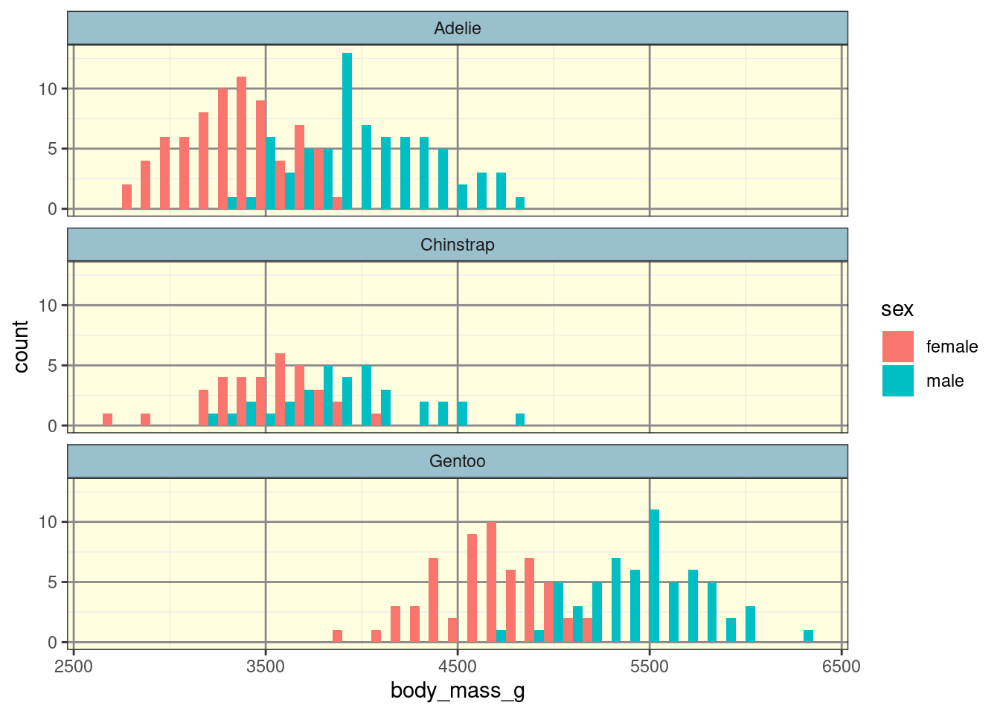
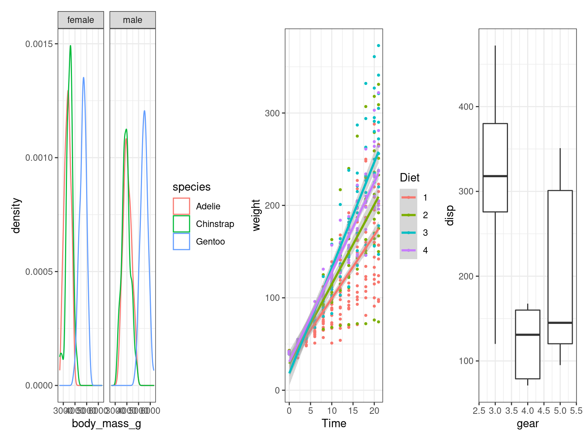
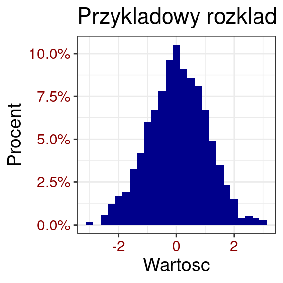
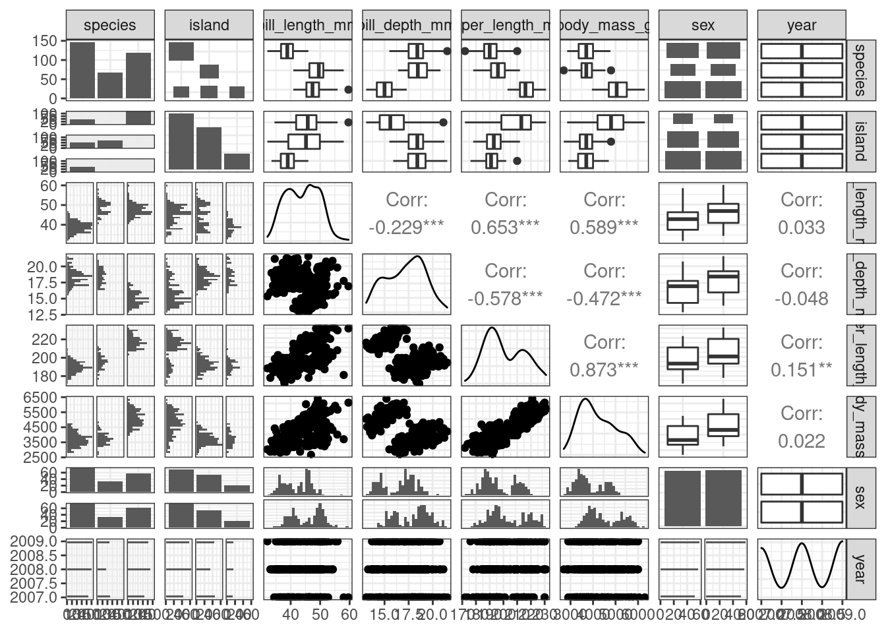
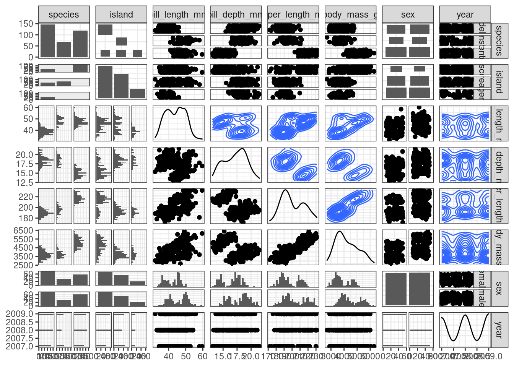

Chapter 5 Wykresy - pakiet podstawowy
W pakiecie podstawowym każdy typ wykresu jest rysowany przy pomocy innej funkcji. Różne funkcje mogą wymagać innego typu danych do działania. Wspólne są natomiast parametry dotyczące wyświetlania i wyglądu wykresu.
Często, żeby uzyskać właściwy wygląd osi, legendy musimy ją dodać samodzielnie przy pomocy funkcji legend lub axis.
Funkcje pakietu podstawowego przydają się najbardziej, gdy trzeba coś szybko sprawdzić, gdyż wymagają mniej pisania niż analogiczne funkcje ggplot2. Jednakże przygotowanie ładnego wykresu korzystając tylko z pakietu podstawowego jest żmudne.
5.1 Histogram - hist
Histogram rysujemy funkcją hist. Należy podać wektor zawierający wartości, które mają zostać zliczone. Najważniejszym parametrem histogramu jest breaks, do którego można podać ilość słupków albo wektor przedziałów. freq = TRUE ozancza że na osi Y znajdą się zliczenie elementów w przydziałach, FALSE oznacza gęstości. Parametry ylim i xlim służą do zmiany startu i zakończenia osi.
Przy pomocy tej funkcji nie jest możliwe narysowanie histogramu z więcej niż jednego wektora. Możemy na niego nałożyć krzywą oznaczającą gęstość przy pomocy lines(density(x)). Możemy także nie rysować wykresu, ale otrzymać jego liczbową reprezentację używając plot=FALSE.
hist(dane1_1$pomiar)
hist(dane1_1$pomiar, freq = FALSE, breaks = 20, col = "lightgreen", xlim = c(2,8))
lines(density(dane1_1$pomiar), col="red")
# liczbowy opis histogramu - przedziały zliczenia, gęstości itd.
hist(dane1_1$pomiar, plot=FALSE)## $breaks
## [1] 2.5 3.0 3.5 4.0 4.5 5.0 5.5 6.0 6.5 7.0 7.5
##
## $counts
## [1] 6 16 22 49 59 59 39 26 22 2
##
## $density
## [1] 0.04000000 0.10666667 0.14666667 0.32666667 0.39333333 0.39333333
## [7] 0.26000000 0.17333333 0.14666667 0.01333333
##
## $mids
## [1] 2.75 3.25 3.75 4.25 4.75 5.25 5.75 6.25 6.75 7.25
##
## $xname
## [1] "dane1_1$pomiar"
##
## $equidist
## [1] TRUE
##
## attr(,"class")
## [1] "histogram"5.2 Wykres rozrzutu - plot
Wykres punktowy albo liniowy możemy otrzymać funkcją plot. Podajemy dwa wektory oznaczające współrzędne na osiach X i Y. Możemy określić typ wykresu type:
p - punkty
l - linia
o - punkty i linia
s, S - schodki
h - linie trochę jak histogram
n - brak
Linię trendu możemy dodać wykorzystując funkcje lm i abline (dla zależności liniowych) albo lines, lm i predict (nieliniowe).
Używając summary i lm możemy wyświetlić wszystkie informacje dotyczące dopasowania.
x <- sort(rnorm(10))
y <- sort(rnorm(10))
plot(x,y)
plot(x,y, type = "l")
#posortowane, losowe liczby z rozkładu jednostajnego
a <- sort(runif(20))*2
b <- sort(runif(20))*2
plot(a,b)
# dopasowujemy prostą zależność b od a i rysujemy na wykresie
fit <- lm(b~a)
abline(fit, col = 'red')
# dane muszą być posortowane żeby działała funkcja lines
set.seed(100)
x <- sort(rnorm(20))
set.seed(300)
y <- sort(rnorm(20))
plot(x,y)
# dodajemy liniową linię trendu
abline(lm(y~x), col = "red")
# albo dopasowujemy wielomian drugiego stopnia
lines(x, predict(lm(y~poly(x, 2, raw = TRUE), data.frame(x = x))), col = "blue")
Więcej informacji na temat dopasowywania modelu do danych w części dotyczącej statystyki :)
5.3 Wykres pudełkowy - boxplot
Używamy funkcji boxplot. Możemy podać jeden lub kilka wektorów, które posłużą do rysowania “pudełek” albo podobnie jak w ggplot jeden wektor z wartościami i jeden ze zmiennymi je grupującymi. Wcięcia w boxplotach - notch=TRUE, wcięcia oznaczają przedział ufności dla mediany. Jeżeli wcięcia na siebie nie zachodzą to dwie populacje są od siebie najprawdopodobniej istotnie różne. names podpisy pod pudełkami.
# Przykładowe dane
x <- rnorm(100)
y <- rnorm(100, mean = 2)
boxplot(x, y)
boxplot(dane1$pomiar ~ dane1$Szczep)
5.4 Wykres słupkowy - barplot
Rysowany przy pomocy funkcji barplot. Podajemy wektor albo matrycę wartości oznaczające wysokości słupków. Możemy szybko przygotować takie zliczenia funkcją table. W przypadku więcej niż jednego rodzaju słupków można okreslić czy mają być obok siebie - beside=TRUE, kolory zmieniamy parametrem col.
barplot(table(dane2$pomiar))
barplot(table(dane2$pomiar, dane2$Szczep))
barplot(table(dane2$pomiar, dane2$Szczep), beside = TRUE)
barplot(table(dane2$pomiar, dane2$Szczep), beside = TRUE, col = c("coral2", "green3", "dodgerblue2"))
5.5 Wykres mozaikowy - mosaicplot
Na tym wykresie liczebności poszczególnych grup są reprezentowane przez pole powierzchni prostokąta. Można go przygotować nawet dla trzech lub więcej różnych zmiennych wyliczeniowych poprzez użycie funkcji table albo formuły.
# z funckją table
mosaicplot(table(dane2$pomiar, dane2$warunki, dane2$Szczep),
col = c("orange", "green3", "white"), ylab = "Warunki", xlab = "Pomiar")
# z formułą
mosaicplot(~pomiar + Szczep + warunki, data = dane2, col = TRUE)
5.6 Wykres kwantylowy - qqPlot
Dopasowanie danych do rozkładu normalnego można wizualnie sprawdzić przy pomocy wykresu kwantylowego.
Funkcja qqPlot z pakietu car rysuje wykres kwantylowy z zaznaczonymi przedziałami ufności.
library(car)## Loading required package: carData##
## Attaching package: 'car'## The following object is masked from 'package:dplyr':
##
## recode# Dane z rozkładu normalnego
x <- rnorm(300)
# Dane z rozkładu lognormalnego
y <- rlnorm(300)
qqPlot(x)
## [1] 13 60qqPlot(y)
## [1] 75 1775.7 Diagram venna
Istnieje wiele różnych funkcji generujących diagramy venna. Funkcja venn z pakietu gplots wydaje się być jedną z łatwiejszych. Jej argumentem musi być lista (tworzona funkcją list - każdy kolejny element listy to może być coś innego: wektor, ramka danych, inna lista itp.). W tym wypadku kolejne elementy listy to wektory zawierające wartości zliczane do diagramu.
Trzeba zauważyć, że wielkości obszarów nie odpowiadają liczebności grupy, może być nawet narysowany obszar z liczebnością 0.
Można tworzyć diagramy z maksymalnie 5 grup, ale powyżej trzech stają się one trudne do odczytania, wtedy lepszą opcją jest narysowanie Upset plot
# generowanie zestawów losowych liter
set_1 <- sample(letters, 10)
set_2 <- sample(letters, 10)
set_3 <- sample(letters, 8)
library(gplots)##
## Attaching package: 'gplots'## The following object is masked from 'package:stats':
##
## lowessvenn(list(grupa_1 = set_1, grupa_2 = set_2, grupa_3 = set_3))
Jeżeli chcielibyśmy mieć kolorowe diagramy należałoby użyć funkcji venn.diagram z pakietu VennDiagram. Ta funkcja stara się nie rysować obszarów, w których nic nie ma, efekt jej pracy jest również ładniejszy ;)
library(VennDiagram)## Loading required package: futile.logger##
## Attaching package: 'VennDiagram'## The following object is masked from 'package:car':
##
## ellipse# Do wyświetlenia wymaga najpierw stworzenia obiektu typu grid
grid.newpage()
grid.draw(venn.diagram(list(grupa_1 = set_1, grupa_2 = set_2, grupa_3 = set_3),
fill = c("red", "green","yellow"),
alpha = c(0.5,0.5,0.5),
filename = NULL))
5.8 Wykres korelacji - corrplot
Jeżeli dane zawierają kilka kolumn z różnymi zmiennymi do szybkiego sprawdzenie korelacji między nimi możemy użyć macierzy korelacji. Z ramki danych można ją wyznaczyć funkcją cor, natomiast wykres takiej macierzy możemy zrobic np. przy użyciu funkcji corrplot z pakietu corrplot.
# ładujemy dane dotyczące pogody
pogoda <- read.delim("data/pogoda.txt")
# tylko pierwsze cztery kolumny zawierają interesujące informacje
colnames(pogoda)## [1] "ozon" "naswietlenie" "wiatr" "temperatura" "miesiac"
## [6] "dzien"pogoda <- pogoda[,1:4]
# dane zawierają brakujące informacje. Możemy je usunąć przy pomocy funkcji complete.cases
# zwraca numery wierszy nie zawierających wartości NA
pogoda <- pogoda[complete.cases(pogoda),]
# przygotowujemy macierz korelacji
macierz <- cor(pogoda)
macierz## ozon naswietlenie wiatr temperatura
## ozon 1.0000000 0.3483417 -0.6124966 0.6985414
## naswietlenie 0.3483417 1.0000000 -0.1271835 0.2940876
## wiatr -0.6124966 -0.1271835 1.0000000 -0.4971897
## temperatura 0.6985414 0.2940876 -0.4971897 1.0000000library(corrplot)## corrplot 0.90 loadedcorrplot(macierz)
corrplot(macierz, method = "ellipse", type = "lower")
5.9 Clustering - analiza skupień
Wykorzystamy funkcję kmeans, która pozwala na grupowanie danych w n-liczbę klasterów. Opiera się na metodzie tzw. klasyfikacji bez nadzoru (unsupervised learning), tak aby uzyskać minimalną wariancję wewnątrz danej grupy.
Słabością tej metody jest to, że dostaniemy tyle grup ile sobie zażyczymy (niekoniecznie naprawdę istniejących), dlatego dobrze jest wypróbować kilka wartości n.
# Przygotowujemy dane złożone z dwóch grup
x <- c(rnorm(100,1),rnorm(100,3))
y <- c(rnorm(100,1),rnorm(100,3))
plot(x,y)
# Łączymy w matrycę - kmeans działa tylko na matrycach
xy <- cbind(x,y)
# Przeprowadzamy podział na grupy
clu <- kmeans(xy, centers=2)
clu## K-means clustering with 2 clusters of sizes 110, 90
##
## Cluster means:
## x y
## 1 0.9665061 1.039814
## 2 3.2469251 3.422692
##
## Clustering vector:
## [1] 1 1 1 1 1 1 1 1 2 1 1 1 1 1 1 1 1 1 1 1 1 1 1 1 1 1 1 1 1 1 1 1 1 1 1 1 1
## [38] 1 1 1 1 1 1 1 1 1 1 1 1 1 1 1 1 1 1 1 1 1 1 1 1 1 1 1 1 1 1 1 1 1 1 1 1 1
## [75] 1 1 1 1 1 1 1 1 1 1 1 1 1 1 1 1 1 1 1 1 2 1 1 1 1 1 2 2 2 2 2 2 2 2 2 2 2
## [112] 2 2 2 2 2 2 2 2 1 2 2 2 1 2 2 2 2 2 2 2 2 2 2 2 1 2 2 2 2 2 2 2 2 2 2 2 2
## [149] 2 2 1 2 1 1 1 2 2 2 2 2 2 2 2 2 1 2 2 2 2 2 2 2 2 2 2 2 2 2 1 1 2 1 2 2 2
## [186] 2 1 2 2 2 2 2 2 2 2 2 2 2 2 2
##
## Within cluster sum of squares by cluster:
## [1] 201.2877 178.5173
## (between_SS / total_SS = 58.6 %)
##
## Available components:
##
## [1] "cluster" "centers" "totss" "withinss" "tot.withinss"
## [6] "betweenss" "size" "iter" "ifault"# możemy sprawdzić dopasowanie - wiemy jakie były grupy
test <- rep(c(2,1), each=100)
ok <- sum(test == clu$cluster)
ok/length(test)## [1] 0.07# Rysujemy ponownie wykres pokolorowany według wyznaczonych grup
plot(xy, col=clu$cluster)
# Dodajemy centra każdej z grup
points(clu$centers, col=1:2, pch=8, cex=2)
# Powtarzamy, ale z podziałem na 4 grupy
# Dane zawierały tylko 2 grupy, ale zostaną podzielone na 4
clu <- kmeans(xy, centers=4)
plot(xy, col=clu$cluster)
points(clu$centers, col=1:4, pch=8, cex=2)
Możemy także grupować dane według wielu zmiennych jendocześnie używając funkcji dist (redukuje wielowymiarowe dane do dwuwymiarowej macierzy odległości) i hclust (podział na grupy). Należy wybrać metodę grupowania, jedne z popularniejszych to ward i complete.
Wynik można przedstawić jako dendrogram korzystając ze zwykłej funkcji plot. Poszczególne grupy na wykresie zaznaczamy używając rect.hclust, musimy jedynie podać ilość grup.
Wyświetlić grupy możemy za pomocą funkcji cutree, tutaj również niezbędne jest podanie ilości grup.
# Wykorzystamy dane spozycie z kursu R, spozycie produktów w różnych krajach
spozycie <- read.delim("data/spozycie.txt", row.names=1)
# Obliczamy macierz odległości
d <- dist(spozycie, method="euclidean")
# Grupujemy kraje
CA <- hclust(d, method="ward.D2")
# Dendrogram
plot(CA)
rect.hclust(CA, k=5, border="red") 
# Podział krajów na 5 grup
grupy <- cutree(CA, k=5)
grupy## Albania Austria Bulgaria Croatia
## 1 2 3 3
## Czech_Republic Denmark Estonia Finland
## 3 4 3 2
## France Germany Greece Hungary
## 1 4 1 3
## Iceland Ireland Italy Latvia
## 4 2 1 3
## Lithuania Netherlands Norway Poland
## 3 2 4 3
## Portugal Romania Russian_Federation Slovakia
## 5 1 3 3
## Slovenia Spain Sweden Switzerland
## 4 5 2 2
## United_Kingdom
## 4